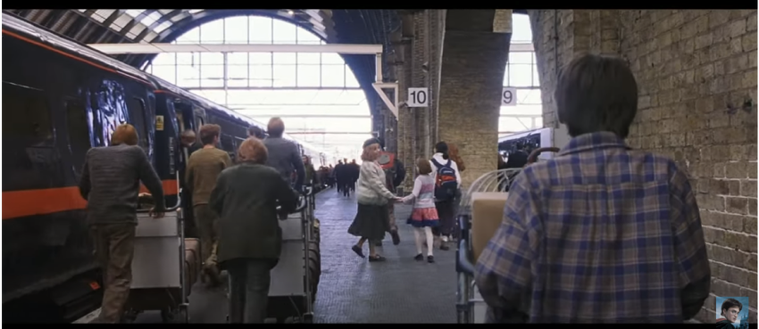

King's Cross Station
Plataforma 9¾Euston Rd., London N1 9AL, Reino Unido
Harry Potter e a Pedra Filosofal
A estação King's Cross em Londres foi escolhida como local para a estação ferroviária Hogwarts Express. Parte da parede dela, entre as plataformas 4 e 5, foi utilizada para filmar as cenas em que Harry e seu grupo atravessam magicamente a barreira de tijolos para chegar até Hogwarts Express. Agora, no local de filmagem, um carrinho de bagagem parece desaparecer magicamente em uma parede embaixo de uma placa da Plataforma 9 ¾, oferecendo aos fãs uma opção fotográfica.
Localização
Estação King’s Cross:
Euston Rd., London N1 9AL - Londres, Reino Unido.
Cena do filme
Harry conhece a Plataforma 9¾
Nesta cena, Hagrid acompanha Harry até a estação King’s Cross, deixando-o com instruções para chegar até a Plataforma 9 ¾. Com a ajuda da Sra. Weasley, ele acha a plataforma e embarca no Expresso Hogwarts.